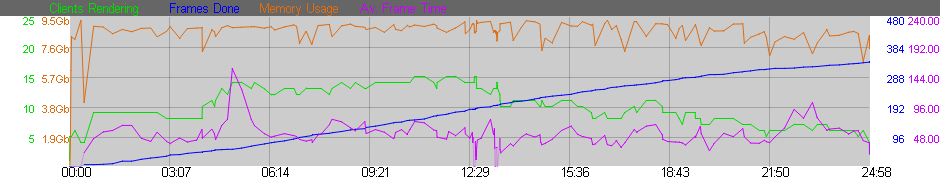
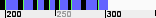

Please check the section Usage.
You can use all Global RR Commandline Flags.
Additional to the global flags you have the commandline flags for rrControl:
-User [name] Select User [name]
e.g. -User "-- all --"
-Project [name] Select Project [name]
-RenderApp [name] Select RenderApp [name]
-noNotRendering Uncheck NotRendering
-noRendering Uncheck Rendering
-noDisabled Uncheck Disabled
-noWaitFor Uncheck Disabled
-noFinished Uncheck Finished
-VPN_NoDirectFileDelete rrControl will not try to delete any files if you delete or reset a job. (slows down server on job delete/reset)
-allowMultipleInstances You can start multiple rrControl at the same time. This is not recommended. If, then you should set a user or project in the dropdown boxes.
The Python Editor can be used to edit any Python file.
As python requires special indentation, the editor tries to get the favored indentation when it loads a file.
It will keep your indentation and will auto-indent.
You can change from tab to space indentation at any time via the menu. The file will be converted.
If you use the TAB key on your keyboard it either inserts a tab or spaces depending on your python file.
The job table shows you all jobs in RR.
You can filter the jobs via dropdown- and check-boxes in the upper left of rrControl.
If you filter the jobs, then rrControl will not update the jobs of other users/projects. (This reduces the network traffic a bit)
You can add/remove columns via the layout menu.
A Layout is not saved by default, you have to save it via the Layout menu
A job has a color which shows its status:
Black |
The job is waiting for a rrClient. |
Green |
The job is currently rendering on a rrCleint |
Orange |
The job is disabled. It will not be send to a client. |
Grey |
The job is finished. |
White |
The job is about to be deleted. |
A job could be shown in multiple colors.
For example: the job could be still rendering, but you have disabled it.
If your jobs are grouped for example by user, then a user can be shown in multiple colors.
As some jobs are waiting, some are rendering, some are disabled.
If there is an error known to RRender, then you see a small triangle in the job table.
To read the error message, please select the job.
In rrControl, please select the tab "Job log", then select "Errors" from the table.
On the rrWebsite you see the error messages in red in the "Log Section" of the job page.
Icon |
Number of Client Errors |
Server Error |
|
1+ |
|
|
7+ |
|
|
15+ |
|
1+ |
Yes |
|
|
7+ |
Yes |
|
15+ |
Yes |
Some rrServer errors are |
|
Some rrClient errors are |
|
BLUE: |
If the background of the error table is blue, then your render licenses for this software are completely used. |
After a job is rendered, the post-script "Sequence Check" loads the cache files created by the client and collects the errors flags from the error analysis.
If the clients do not have created cache files ("Local Render Out" was disabled for the job), then "Sequence Check" loads the original full res frames.
Icon |
|
No Error found. |
|
Flag "Info" |
|
Flag "Warning" |
|
Flag "Error" |
For a description of the Flags, see the help of rrViewer.
You can add/remove columns via the layout menu.
A layout is not saved by default, you have to save it via the Layout menu.
A Client has a colors which shows their status:
Black |
The rrClient is waiting for a new job |
Green |
The rrClient is rendering. The job is selected in rrControl. |
Green |
The rrClient is rendering. |
Orange |
The rrClient is disabled |
Grey |
The Client is offline. |

This tab shows some information about the selected jobs.
If you have selected multiple jobs,
then the submitter shows you differences between the selected jobs in pink.
RRender displays Preview Frames on the job page in rrControl and at the rrWebsite.
You should check these Preview Frames after some time to see if there is any problem rendering the scene.
Rendering some preview frames does not take that much time, but loosing a whole render job because something was missed...
Also see Preview Render
Sometimes it can help to take a look at the Statistics of a job.
The most important graph is the blue line.
It shows you the frames rendered over time.

rrControl and rrWebsite show you a framebar of the job:

The framebar shows the frames as bars.
The colors are:
White |
The frames are missing and not assigned to a client. |
Blue |
Assigned to a client for rendering (Sequence Divide) |
Green |
A started frame (placeholder file). If a client starts to render a frame, then the renderer or RR often creates a placeholder file. rrViewer will show you the client name that has started the frame. If a client is aborted, then it can be that placeholder files are left. The rrServer will delete these placeholder files in that case. |
Black |
Rendered/Finished Frames. |
This section allows you to change all settings for a job.
Please see Usage/Job Settings for all available settings.
Please check the section Usage as well.
This log contains all kind of informations like when a job was send to which client, if someone has send a command for the job, ...
If you see an error triangle in the job table, then you should check the error messages of the job.
See Troubleshooting/Error Analysis.
This table shows the list of all frames and which client has rendered it.
As well as frame time, max CPU and max Memory usage.
This table is created by the rrClients.
After a rrClient has rendered a segment, it will add its frames with all informations to this table.
It will not update the table while it is rendering.
Please use rrViewer, for some render applications you will have a client name even while the client is rendering.
This date and time are the same date and time of the client render log file.
You can select the render log files on the left side.
The client was not able to get exact information about each frame it got.
It had to calculate an average time for all frames it got.
The number after "av" shows you how many frames have been rendered in this segment.
While a frame is rendering, the client takes stats like
Currently the CPU values have no visual graph, they show a shortened % value.
_ = 0%
0 = 0-9%
1 = 10%-19%
...
9 = 90-99%
# =100%
The output of the environment setup and the render application.
A console application has two ways to print informations.
It can print into a StandardOut and into a StandardError.
(If you use a terminal, you will see both in realtime with no visual difference. If you want to capture, you have to capture them separately)
Everything that is printed into the StandardError by the application is marked with an rrErr:
These are no error messages that the rrClient has recognized. These are messages that should be error messages.
Note:
Some render applications have chosen the wrong output for some messages by mistake.
If you print anything with your Python script, then this information is shown in this tab.
This section shows some stats and informations about RR.
This table shows you the number of render licenses you have set for each render application for RR.
It shows the maximum number of licenses RR is allowed to use for rendering.
Then how many licenses RR actually uses.
And at last "Reduced Licenses" and buttons to free/return licenses for artists. See rrConfig/Render Licenses for more information.